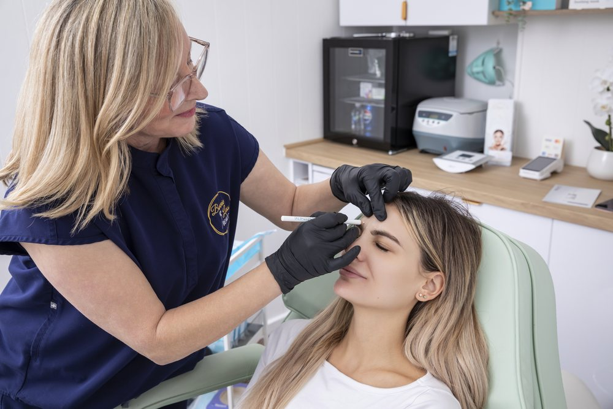

Advanced Nurse Treatments
A lift, without surgery and without a general anaesthetic.

PDO cog threads - a dissolvable suture material, non-surgical and TGA approved - gently lift sagging skin and stimulate long-term collagen production. The threads dissolve over time and leave the collagen behind.
Cheeks, jawline, nasolabial lines, marionette lines and the appearance of jowls.
Instant lift, with continued tightening over 6 to 12 weeks. Results last 12 to 18 months.
A consultation with a nurse is required before this treatment to assess your suitability. Individual results vary and are not guaranteed. Any procedure carries risks, which will be discussed with you.
Free · 60 seconds · No obligation
Take the free skin assessment. Five questions, and you will get back a straight read on what is driving the change and what would actually help - whether or not you ever book with us.